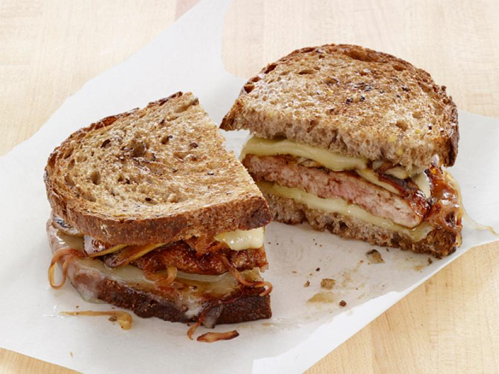

Patty Melt

A patty melt is basically a better version of the humble burger. While the round burger sits on top of a soft bun, the patty melt's patty is shaped into more of an oblong rectangle to fit toasted rye bread before being topped with plenty of Swiss cheese and caramelized onions.
Regular burgers can get a bit boring after awhile. The solution? Our favorite dressed-up deli sandwich: The patty melt. Melty Swiss cheese and caramelized onions sit atop our ground beef patty, all sandwiched between perfectly toasted rye bread.
Ingredients
- 3 tablespoons extra-virgin olive oil
- salt and freshly ground black pepper to taste
- 1 medium onion, thinly sliced
- 10 ounces button mushrooms, sliced
- 8 tbsp. butter, divided, plus more as needed
- 8 slices rye bread
- 8 slices Swiss cheese
- 1 1/2 lb. ground beef
Steps
- Form beef into 4 slightly oblong patties and season each one with salt and pepper.
- Salt and pepper the chicken well. Then don't bother with salting the flour and bread crumbs.
- In a large skillet over medium heat, melt 4 tablespoons butter. Add onion and cook until deeply golden, 20 minutes, stirring occasionally. Transfer onions to a plate.
- To same skillet, melt another 2 tablespoons butter over medium heat. Add patties and cook until desired doneness is reached, about 3 minutes per side for medium. Transfer patties to plate and tent with foil to keep warm. Drain fat.
- Return skillet to medium heat and melt remaining 2 tablespoons butter. Working in batches, toast slices of bread until golden, 2 minutes per side. Add more butter, as necessary.
- To assemble sandwiches, place one slice of Swiss cheese on a piece of bread, then a patty, caramelized onions, another slice of cheese, and top with a second piece of bread. Repeat with remaining sandwiches.
Recipe List